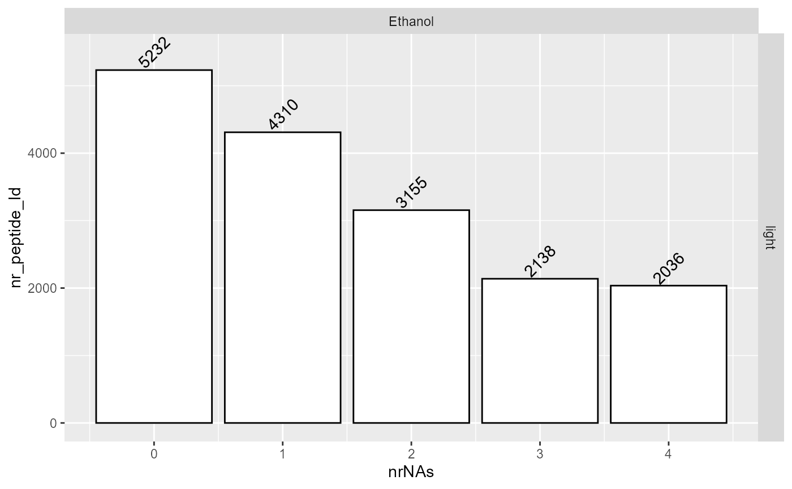
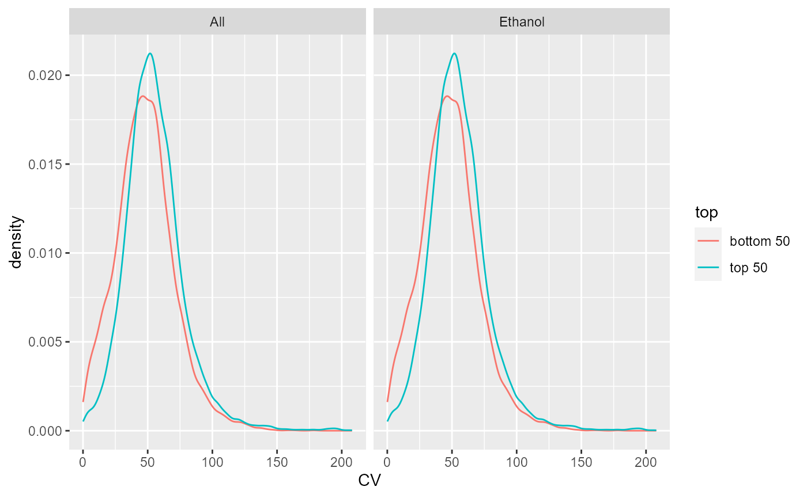
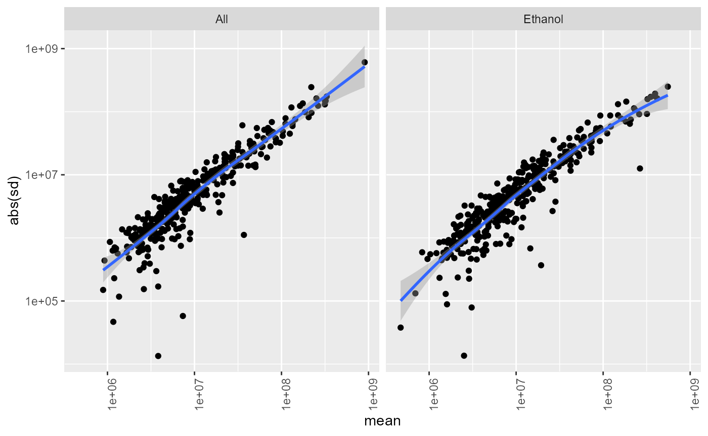
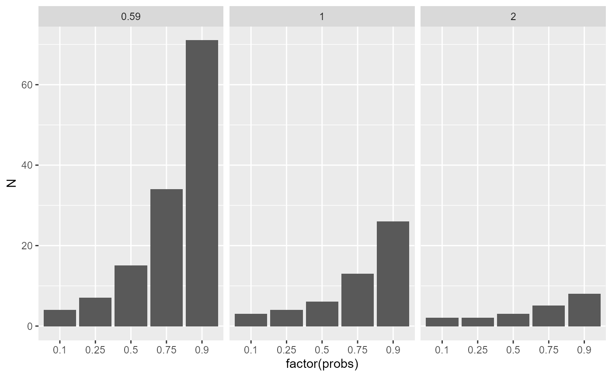

QC and Sample Size Estimation.
Witold Wolski
14/12/2020
Source:vignettes/QualityControlAndSampleSizeEstimation.Rmd
QualityControlAndSampleSizeEstimation.RmdThe LFQData API
Create configuration for MQ peptide file or use function create_config_MQ_peptide
library(prolfqua)
library(tidyverse)
atable <- AnalysisTableAnnotation$new()
atable$fileName = "raw.file"
# measurement levels.
atable$hierarchy[["protein_Id"]] <- c("top_protein")
atable$hierarchy[["peptide_Id"]] <- c("sequence")
atable$hierarchyDepth <- 1
atable$ident_qValue = "pep"
atable$setWorkIntensity("peptide.intensity")
anaparam <- AnalysisParameters$new()
anaparam$min_peptides_protein <- 2
config <- AnalysisConfiguration$new(atable, anaparam)
datadir <- file.path(find.package("prolfquaData") , "quantdata")
inputMQfile <- file.path(datadir, "MAXQuant_ComboCourse_p2691_March_2018_WU183012.zip")
inputAnnotation <- file.path(datadir, "annotation_ComboCourse_p2691_March_2018_WU183012.xlsx")
startdata <- prolfqua::tidyMQ_Peptides(inputMQfile)
startdata <- prolfqua::tidyMQ_top_protein_name(startdata, prot_col = "proteins")
annotation <- readxl::read_xlsx(inputAnnotation)
annotation$experiment = "p2691"
startdata <- inner_join(annotation, startdata)
config$table$factors[["condition_"]] = "condition"
config$table$factors[["batch_"]] = "experiment"
config$table$factors[["Run_ID"]] = "Run_ID"
config$table$factorDepth <- 1
adata <- setup_analysis(startdata, config)
xx <- toWideConfig(adata, config)
adata <- adata %>% filter(condition_ == "Ethanol")Remove zeros from data, and filter for at least two peptides (proteins with a single peptide are dropped).
lfqdata <- LFQData$new(adata, config)
lfqdata$remove_small_intensities()
lfqdata$config$parameter$min_peptides_protein## [1] 2
lfqdata$filter_proteins_by_peptide_count()Visualization of not normalized data
lfqplotter <- lfqdata$get_Plotter()
lfqplotter$intensity_distribution_density()
nah <- lfqplotter$NA_heatmap()
nah
lfqplotter$missingness_per_condition()
stats <- lfqdata$get_Stats()
prolfqua::table_facade( stats$stats_quantiles()$wide, paste0("quantile of ",stats$stat ))| probs | All | Ethanol |
|---|---|---|
| 0.10 | 24.36990 | 24.36990 |
| 0.25 | 37.17160 | 37.17160 |
| 0.50 | 50.54850 | 50.54850 |
| 0.75 | 64.39117 | 64.39117 |
| 0.90 | 79.19933 | 79.19933 |
stats$density_median()
stats$stdv_vs_mean(size = 400) + scale_x_log10() + scale_y_log10()
Normalize
We normalize the data by \(\log2\) transforming and then z-scaling.
lt <- lfqdata$get_Transformer()
transformed <- lt$log2_robscale()
transformed$config$table$is_intensity_transformed## [1] TRUE
pl <- transformed$get_Plotter()
pl$intensity_distribution_density()
transformed$get_Plotter()$pairs_smooth()
## NULL
p <- transformed$get_Plotter()$heatmap()
p
There is also a function to create an heatmap based on the correlated samples.
stats <- transformed$get_Stats()
stats$stat## [1] "sd"
prolfqua::table_facade(stats$stats_quantiles()$wide, "Standard deviations")| probs | All | Ethanol |
|---|---|---|
| 0.10 | 0.2158293 | 0.2158293 |
| 0.25 | 0.3479804 | 0.3479804 |
| 0.50 | 0.5327707 | 0.5327707 |
| 0.75 | 0.7800042 | 0.7800042 |
| 0.90 | 1.1871545 | 1.1871545 |
stats$density_median()
Density of the standard deviation
Check for heteroskedasticity. After transformation the sd should be independent of the mean intensity.
stats$stdv_vs_mean(size = 400) + scale_x_log10() + scale_y_log10()
check if sd constant for all intensities
Estimate sample size for main experiment.
sampleSize <- stats$power_t_test_quantiles() %>% filter(condition_ != "All")## i 1 delta_i 0.59
## i 2 delta_i 1
## i 3 delta_i 2
prolfqua::table_facade(sampleSize, "Sample sizes. delta - Effect size")| condition_ | probs | quantiles | sdtrimmed | N_exact | N | delta |
|---|---|---|---|---|---|---|
| Ethanol | 0.10 | 0.2158293 | 0.2158293 | 3.387794 | 4 | 0.59 |
| Ethanol | 0.25 | 0.3479804 | 0.3479804 | 6.575067 | 7 | 0.59 |
| Ethanol | 0.50 | 0.5327707 | 0.5327707 | 13.829604 | 14 | 0.59 |
| Ethanol | 0.75 | 0.7800042 | 0.7800042 | 28.429480 | 29 | 0.59 |
| Ethanol | 0.90 | 1.1871545 | 1.1871545 | 64.529320 | 65 | 0.59 |
| Ethanol | 0.10 | 0.2158293 | 0.2158293 | 2.204347 | 3 | 1.00 |
| Ethanol | 0.25 | 0.3479804 | 0.3479804 | 3.208830 | 4 | 1.00 |
| Ethanol | 0.50 | 0.5327707 | 0.5327707 | 5.600337 | 6 | 1.00 |
| Ethanol | 0.75 | 0.7800042 | 0.7800042 | 10.602602 | 11 | 1.00 |
| Ethanol | 0.90 | 1.1871545 | 1.1871545 | 23.124210 | 24 | 1.00 |
| Ethanol | 0.10 | 0.2158293 | 0.2158293 | 1.704862 | 2 | 2.00 |
| Ethanol | 0.25 | 0.3479804 | 0.3479804 | 1.986106 | 2 | 2.00 |
| Ethanol | 0.50 | 0.5327707 | 0.5327707 | 2.525850 | 3 | 2.00 |
| Ethanol | 0.75 | 0.7800042 | 0.7800042 | 3.648214 | 4 | 2.00 |
| Ethanol | 0.90 | 1.1871545 | 1.1871545 | 6.643530 | 7 | 2.00 |
sampleSize %>%
ggplot(aes(x = factor(probs) , y = N)) +
facet_wrap(~delta) +
geom_bar(stat = "identity")
Getting the sample size for all the peptides.
stats$power_t_test()Please note that these QC were made all on peptide level. Using the LFQDataAggregator you can estimate protein intensities. Sample sizes on protein level might be smaller.